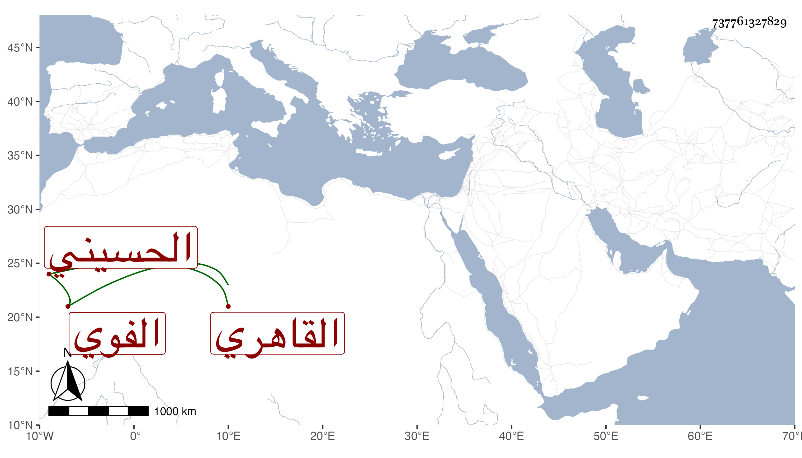

0902Sakhawi.DawLamic.ITO20230111-ara1.EIS1600.737761327829
Biography ID: 737761327829
444
عبد الرحيم بن أحمد بن محمد بن منصور زين الدين ومحب الدين الفوي الأصل القاهري الحسيني سكنا ويعرف بابن بحيح بمهملتين تصغير بح وهو لقب لجده . قرأ المنهاج وعرضه واشتغل على الحناوي والشريف النسابة والعز عبد السلام البغدادي وتكسب بالشهادة بل ناب في القضاء عن البدر أبي السعادات فمن بعده . مات في رمضان سنة تسع وسبعين ، وهو والد زوج القاضي شمس الدين بن بيرم الحنبلي .
